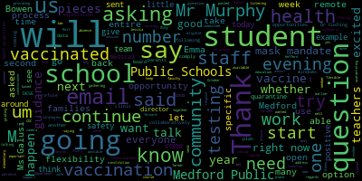

[Cushing]: All right, good evening, ladies and gentlemen. We apologize for the delay in getting started. Please just wait one minute. We're trying to get a few more people on, and we will be with you momentarily. Thank you very much.
[Unidentified]: Once again, apologize for the delay, slight technical difficulty, and we will be with you momentarily.
[Cushing]: All right, good evening Medford. My name is Dr. Cushing. I'm the assistant superintendent of schools for secondary. We appreciate your patience as we have a slight technical difficulty getting two of our very important people on for this call. And we would like to now welcome Dr. Edouard-Vincent. I'd like to welcome David Murphy, our assistant superintendent for finance and operations. Suzanne Galussi, our assistant superintendent for elementary schools, Joan Bullen, our Director of Pupil Services, and Avery Hines, our Director of Health Services. And without any further ado, I am going to turn it over to Dr. Edouard-Vincent.
[Edouard-Vincent]: Good evening, everyone. Thank you. In one of my most recent communications, I shared that flexibility is something that we're going to need to be prepared. And so today was an example of being flexible as we encountered a little technical difficulty. um on our side here but I am so excited to be here this evening. I um this evening it's an opportunity for us the Medford Public Schools and my entire team to be able to respond to some of the questions that many of you put forward through um email communications and those of you who are going to be on live tonight sending questions to us We're very interested in responding to your questions. We want to let you know that we're excited for the start of the school year. I think it's critically important that I say, as we've always said in the past, that our priorities are safety, equity, and consistency, and we're going to continue to use those as our guiding pillars to do all the work that we're doing this evening. Because so many of you did send some questions through email, I would like to just recognize and start the top of the session saying that. But before I address some of the questions that were sent in and knowing that more questions are going to come forward, I do want to give each member of the team just an opportunity to say to you some of the pieces that they will be addressing today. So I'd like to start with Mr. Murphy, if you wouldn't mind sharing some of the pieces that you're going to be able to speak to, and we'll just go around the group and let everyone say a few pieces that we addressed over the course of this session right now. We're not hearing you at this moment, Mr. Murphy. So I will ask Ms. Bowen to just give us a few pieces that you will talk about over the course of this evening, and then we can have Dr. Cushing, and then we'll move back to Dean Murphy.
[Bowen]: Good evening. Can everyone hear me okay? All right, great. Good evening. I just want to thank everyone in the community for joining us tonight. I just want to give you several updates in regards to special education programming and our initiatives that are coming up this school year. We just wrapped up our extended school year program in August 13th, and it was a great success. We had a lot of staff work through the summer, so we're very happy and appreciative that they were able to do that and provide our students with services. We have been busy interviewing and hiring for our many open positions within the district. We do have one new administrator joining us. Kim Clinton will be the special education coordinator at the high school, and there'll be a few shifting of the administrators, the other special education coordinators' responsibilities throughout the district. Susanna Campbell will also be at the McGlynn Elementary and Middle School. Lauren Perilla will be at the Missituk, the Andrews Elementary School. And everyone else will remain in their specific responsibilities and roles. I did want to let people know that we have filled our evaluation team leader positions. Sarah Anders, who is our connections teacher, will be joining us as the ETL at the Brooks Elementary School. We also have Robin Reier, who will be joining us at the Andrews Middle School, and Amy Delano, who will be our new ETL at the high school replacing Kim Clinton. We have this year, and some of them include our special education teachers will be involved in a year-long professional development regarding IEP writing with Alan Bloom, who is the guru of IEP writing. We'll continue our work with dyslexia. We have a team of general education and special education leaders who have gone through the Massachusetts dyslexia guidelines. They have reviewed Medford's level of compliance with those guidelines and have developed and will begin implementation of action plans that target those prioritized areas. Lastly, we are piloting our disability awareness curriculum in the schools. We are very excited about this. This is a continuation of Susanna Campbell's work with the disability awareness workshop that she does in, that she has provided with staff members throughout the district the past two years. We will be having classrooms across the district focus on specific disabilities. So kindergarten will be focusing on autism, grade one will be visual impairment, and our high school students will be focusing on disability as civil rights. And our goal is to expand each year with a different grade level and a disability so that all grade levels are covered in the next couple of years. So we're very excited about the upcoming school year. We look forward to working with you and continue to prioritize our most vulnerable students as we return to school in the fall. Thank you.
[Galusi]: All right, good evening. As Dr. Cushing earlier said, my name is Suzanne Galusi. I'm the assistant superintendent of elementary education. So I'm just going to provide a few little updates that we've been working on this summer. So first, our big focus district-wide, which Dr. Cushing will talk about too in a little bit, but our big focus this year is SEL. which means social-emotional learning, and starting the year so that we are creating supportive, engaged, and collaborative learning environments for our students. At the elementary level, that means responsive classroom, which I've spoken about before in forums such as this, school committee meetings, and in my updates that I send to families. But responsive classroom, we are going to focus on this. In part of that program, there's something that's called the first six weeks. In Medford, we're kind of doing it as the first three weeks. But the first three weeks of school are going to work on those skills that are going to lay the foundation for that learning environment that's going to carry through for the entire year. So it is a time to build the classroom community, build positive, safe, relationships within that classroom and work on expectations. It's a time for the teacher and the students to work on how they want the learning environment to be for the year and going through the expectations for every block of the day. So what does it look like? What does it sound like? How should we be when it's math class, when it's writing class, when it's science class, and working with students so that they're aware of what the expectations are throughout the day. will have them in a very good position to know how the day is going to be for them and then how the year will carry on. When we lay the foundation like this at the beginning of the year, There's less disruption to the learning and there's more engagement on the students part. It also builds trust and empathy, which are skills that we want not only for learners, but for humans in life. This summer, we Well, at the end of the year, we created at every building a responsive classroom support team. So there are teachers at every building that are going to be the touch point for that school building when it comes to responsive classroom and social emotional learning. Those teachers engaged in a week-long responsive classroom training this summer. Out of that group of trainers, two of them this week gave some training on responsive classroom to new teachers so that they're ready to start next week understanding our expectations for responsive classroom and that initiative here at Medford Public Schools. They will also be providing district training throughout the year. Another exciting piece, as we have mentioned last year, but I will mention it again now, is we have an additional special for the students this year. So that means there will be five offerings for students as a special activity. So there's art, and there's music, there's technology, there's physical education, and now there's Nexus. Nexus is a class that is going to target age-appropriate skills for students in social-emotional learning and executive functioning. So we're going to re-engage students in school and hone on those skills that are the social skills that are going to help them navigate school again, and also work on some of those executive functioning skills that are necessary for the grade level. We've partnered with Hill for Literacy. It is a group we've partnered with before, but this year Hill for Literacy is going to be coming in every month and working with our K-2 staff on their ECRI program, which is Enhanced Core Reading Instruction. It is based on the science of reading and we're so very happy and honored that they're going to be working with us this year. I'll be sending out more detailed information about that to families as we begin. And then the last piece I just wanted to mention is, I'm sure it's top of mind for everyone, but principals have been working all summer alongside me planning for this year. And they've put in lots of hours, but I wanted to let you know that when It comes to school-based routines. So how is it going to be at arrival or dismissal, lunch, the schedule of the building? All of that will be shared by principals prior to the first day of school. But I do want families to know that at the elementary level, there will be two separate locations for lunchtime. That way we can split up each lunch period and ensure that we are socially distancing students during lunchtime. Um, please email me if yo or give me a call. I'm h any questions or concerns you very much and we do look
[Cushing]: All right. Good evening, everyone. Once again, my name is Dr. Cushing. I am the assistant superintendent for secondary education and I gotta say, you probably hear when I send a message, when I talk, I talk about it's being a great day to be a Mustang. And today was a great day to be a Mustang as we welcome back to the high school, our ninth grade students and any 10th grade students who may have been fully remote last year. And we also welcomed our sixth grade students to both our middle schools with any seventh grade students who may have been fully remote last year. Seeing the kids in the buildings and hearing the principals report the life that was in the buildings, the students were engaged. We had almost 100% participation at our middle schools, which is simply phenomenal. And we are extraordinarily excited to welcome your children back to the safety of Medford Public Schools. We are really focused once again on safety, equity, and making sure that those two pieces are in our forefront as we move forward. We're also going to be focusing once again on consistency. And to that end, I'd like to talk about some of the things that we're going to be doing. We have really improved in our area of science at the high school as we have welcomed, as we have added our, I apologize for stumbling. I'm also monitoring the stream yard. So I just want to make sure that the questions coming in and that everyone is able to be on. We just updated all of our science textbooks. Um, and really an amazing experience. Our chemistry textbook was, uh, was quite old and we've been able to, and basically one fell swoop to update that. We have also, um, been able to, uh, hire, uh, some really exceptional staff, uh, in all of our areas. Um, we've got some really amazing teachers coming on board to Medford and we're very excited for that. Um, Let's see here. We've also added at the middle school. We were sad to see our assistant principal, Mr. Burnham, step aside for a great opportunity. But this year we're adding Ms. Farrah Lally as the assistant principal at the Andrews Middle School. And Nicole Sanford has been elevated from the great teacher that she was to now serving as an assistant principal at Medford High School. This year, this summer, we have done a tremendous amount of work on social-emotional learning. We trained 20 of our staff members in the social-emotional learning realm and have really committed to that at the secondary level for the first three weeks of school so that we can make sure that your children are part of our school community moving forward. In both the middle schools and the high school, in the coming weeks, you will be seeing uh, notifications from myself and the principals for us to, uh, be looking to have a student, uh, body, uh, that can have frequent conversations with their principals and myself, uh, and, uh, serve as representatives of their student body. Uh, student voice is going to be a tremendous part of, uh, this year and the years to come in Medford. And we want to make sure that we're listening to student voice and we're hearing the issues that affect them, and we want to make sure that they are well supported. We have many great things coming for secondary education, and not the least of which is a nearly $400,000 grant that we were awarded. We knew about it earlier in the summer, but the information was embargoed, and that will support our construction and craft laborers and other parts of our vocational curriculum. So at this time, toss the baton to Mr. Murphy, our assistant superintendent for finance and operations.
[Unidentified]: Indeed, I am. Are you able to hear me?
[Galusi]: Yes, we can.
[Murphy]: I appreciate her hosting me, and I hope the internet here continues to host us for the remainder as the team did to everyone for joining this call and for as we build toward the new school year with enthusiasm and excitement. And as I'm sure has been said, I don't know for sure, but I suspect it's been said on this call, everyone here at the Medford Public Schools is working for all students back, whether they've been gone for a couple of months or been gone for a year and a half. We're eager to help them become re-acclimated to the school environment and strengthen both their students' relationship and all the families' relationships with the individual school communities that make up the Medford Public Schools. So just on the operational side, we've sent out a number of communications in recent days, including today, about some of the work that we've been doing to get prepared for the new school year, including a series of public health periods as we continue to do everything we can to stop the spread of COVID-19. We'll also be continuing our partnership with Tufts University. Students and staff have the opportunity to participate in COVID-19 testing on a twice-weekly basis to start the school year. We will be starting with our regular programming, athletics and band, and a COVID-19 test starting tomorrow morning. We'll also be testing on Friday, and then we'll begin the regular testing. And of staff, on a weekly basis, Um, you may have read, uh, earlier today that for teachers. Announcing that we've reached a tentative agreement unit, our teachers, uh, in which, uh, mandatory testing on a weekly basis. Proof of vaccination, um, with important step and ensuring that, um, we we have within our school community. We know that that's our greatest threat of COVID-19.
[Unidentified]: I know there are a lot of other questions about vaccination. We have to work out with our make allegations, uh, and. With the community. Um, there are. Mask. Language. I'm here.
[Cushing]: So, unfortunately, we are having technical difficulties with two important members of our team. However, I'll pick up where Mr. Murphy left off. Earlier today, we announced a critical agreement, technical agreement with the members of the Medford Teachers Association, and it appears that the superintendent is back. Maybe Dr. Edwards, you guys can turn off your camera. That might help with our issue. And so.
[Galusi]: That's a good suggestion, Dr. Cushing.
[Edouard-Vincent]: I will turn the camera off and hopefully you'll be able to hear us without any problem. And if so, let us know and we'll try again.
[Galusi]: I think Mr. Murphy should start over with the update on the Teachers Association.
[Edouard-Vincent]: Thank you.
[Murphy]: Sorry about that. The camera just didn't want to turn off as I was going to be on it. So, as I was saying, as you may or may not have heard, the superintendent and the president of the Teachers Union, Charlene Douglas, did announce today a tentative agreement that was reached between the district and our largest bargaining partner, our teachers and members of the Teachers Bargaining Unit. In that agreement, the teachers have agreed to mandatory testing on a weekly basis. That's a continuation of a practice that we had in place per our agreement with that union last year, and something that we certainly are hopeful that we'll be able to extend throughout the organization for all of our employees. In addition, the teachers union has agreed to furnish back proof of vaccination during the first week or so of school. That proof of vaccination will be kept with our health services department in confidence and will help us to ascertain the level of vaccination we have amongst our employees. And that will help assist us in determining the next steps that we will take in order to make sure that we have the maximum amount of vaccinated population within our school communities, we believe firmly that that is our safest and most important safeguard against both the contraction and the spread of COVID-19. So that's where we are with respect to vaccination. I know there are, as I was saying before, I know there are some questions that have been raised related to vaccination, and those are questions that are being raised in every district. across the Commonwealth and across the country. Some of those are parts of the conversation that we're having with our collective bargaining partners. And so it's not necessarily the case that we'll be able to answer every question in as great a detail as we might prefer. But certainly we're very clear with respect to what our priorities and what our convictions are with regard to the importance of getting vaccinated. And we're also collecting that information with respect to our students so that we can make a determination as to exactly what What is the level of vaccination within the Metro Public Schools community? I said earlier, but I'll just say again, just in case the audio had cut out, that we also continued our partnership with Tufts University to ensure that our testing program that saw approximately 60,000 COVID-19 tests administered last year and was a major pillar in the work that we did to ensure that there was the absolute minimal amount of in-school transmission of the virus. That will continue beginning tomorrow, August 26, with COVID-19 testing being available for our student athletes and other participants in extracurricular programming that are already in school now or on campus. And so that will start tomorrow. And then our staff testing will start next week and student testing across the entire student body. will begin on September 9th. So just to the questions that I've seen so far, yes, we are going to continue to do COVID-19 testing. Yes, we are doing everything within our power at the moment to ensure that we have the maximum amount of vaccination within our community, our school community. And yes, we will be wearing masks consistent with Commissioner Riley's statewide directive that was issued this week. And we will be doing a number of other public health, following a number of other public health protocols, including specific protocols with respect to meal periods, and ensuring that where possible, we have necessary distancing and other common sense preventative steps that we take to ensure we minimize the risk of students and staff have with respect to COVID-19. So maybe if the team could give me a thumbs up, this was a little more successful in terms of delivering this message, right? Thanks.
[Cushing]: Significantly so.
[Murphy]: Well, at Medford Public Schools, we're all about continuous improvement, and so we're glad to hear that we're making steps forward, even within the small confines of this call. We certainly hope it's a small call, based on how this has gone so far. So thank you.
[Edouard-Vincent]: Thank you, Mustang Nation. Thank you for your patience. It was as if I prophesied when I talked about flexibility. We are incredibly flexible in the Medford Public Schools, and we will continue to exercise that flexibility. When there's a will, there's a way. Although you can't see me, I am going to try to just go through some of the questions that did come through that were sent in to us at the info at Medford. k12.ma.us email. Eileen Moncel sent an email. This question asking us about what happens when a student tests positive. We do have, they were asking what's the process going to be regarding quarantine and close contacts. And what I can say is, what you said a little earlier, we will continue to work very, very closely with the Department of Public Health Our director of nursing, Ms. Avery Hines will also be guiding us and giving us medical guidance and direction in terms of what is needed. And so the second part of the email was what will happen if a student is missing school since there isn't a remote option. And so, yes, the commissioner has said the goal this year is to really try to get back to normalcy and have all students in school. So there is not a remote option available. If a student is sick, or needs to quarantine for a short period of time, work will be made available for that student. And it will definitely be documented as an excused absence, because we'll know the cause of that absence. And we will work collaboratively with the teachers in order to address the needs of the student. I was going to say if either Ms. Joan Bowen or Ms. Galusi wanted to give other examples about what would happen with school work because we would be following essentially the home and hospital expectations or programming.
[Bowen]: I can speak in regards to students with disabilities. What we would need is a student was not going to be able to access instruction due to a significant medical need. We will require medical documentation and follow the home and hospital instruction that DESE has set out for us. Once we received the medical documentation, the team would reconvene to discuss what services the student currently receives and how they will be implemented while the student is at home. This will be on an individualized basis and based on students IEP goals and objectives and what their specific needs are. Suzanne, I don't know if you want to speak more to your area.
[Galusi]: Sure. I think the only thing that I would mention is that, um, if students have to be at home, um, for any reason, work would be provided and communication between the teacher and the student and family, um, would just occur throughout the week, um, as a, as a way. And then when the student returns to school, any type of assistance or help remediation, um, enrichment, what have you would take place between the family and the teacher.
[Edouard-Vincent]: Thank you for those responses. I was going to move to a second email from Jessica Healy, where she asked questions about the DESI mask mandate that she was asking about air conditioning and asking about now that the mask mandate has been delivered by DESE until October, will we be following those guidelines and their recommendations? And then she said, will we discontinue use when they see students, when DESE says that students may remove them, or will we, Medford Public Schools be implementing our own mask mandate? So we will be following guidance from the CDC from DESE and from our own local Department of Health. And we will continue to monitor our progress. It's too early right now to predict what's going to be happening in October. But what we are doing, which was mentioned earlier, is we will be testing. We will do the pool testing consistently on a weekly basis. We also have the option to provide rapid testing if a student were to potentially show symptoms during the day. And again, we're very proud of the strategies and all of the mitigation strategies that we used last year, which were best practices, which were being replicated in other places. We're going to continue to use those best practices and get solid medical guidance working collaboratively with our board of health in order to guide our community and what happens in the Medford public schools. But I just wanna assure you and assure the entire community that we are prioritizing the safety and health of all of our students and all of our staff. So I wanted to make mention of that. There was another email that came in from Jessica Revecchio, and she was talking about Massachusetts general law chapter 69, which talks about under that particular law, that it's a description of what is allowed. And she was talking in regards to the mass mandates and the vaccines. I just want to take this opportunity to say that tomorrow between 3 and 7 PM, The city of Medford will be hosting a vaccine clinic at the farmer's market next to the Condon Shell between 3 and 7 p.m. So students that are of age, staff community members, please take advantage of that opportunity. And again, Medford Public Schools will be offering, in collaboration with the Board of Health, we will be offering additional vaccine clinics in order to increase those numbers and continue to keep our community safe. There were questions – she had questions about lunch and about cafeteria, asking whether windows would be open when possible. Would the windows be open or doors open during gymnasium classes? And the answer is yes. Windows will be open whenever possible. We also have a significant amount of HEPA filters, and I am going to let Mr. Murphy talk about all of the good practices that we have here in Medford that we're going to continue to use to keep our entire community safe, whether it's in the cafeteria, whether it's in the gymnasium, whether it's in an auditorium, whether it's in a classroom, the best practices that we're going to employ.
[Murphy]: Sure. Thank you, Superintendent. So I think, as I mentioned a minute ago, there are a series of protocols that we can be in place with respect to meal periods and uh, someone on the team can give me a hand signal if we've already covered these but for the moment i'm going to assume that we haven't um, so We will um with regard to Okay Sure, we're just starting with meal periods and i'll talk a little more broadly about some of the other protocols. Um We are going to reduce occupancy in our eating, uh areas uh in venues by approximately 50 percent um That's something that when we have the space to do it, it's just generally a good practice under these circumstances. And so there's a little bit of a domino effect in terms of the scheduling of some lunch periods and some recess periods and some PE classes that will have to utilize other venues and may, under certain very limited circumstances due to inclement weather, have to transition to health classes on some specific days, but generally speaking, the ability to reduce our occupancy in the areas where students are eating will be a significant help to us in terms of following those best practices at the beginning of the school year. It is frankly our hope and intention that we are not needing to employ each of these over the course of the entire school year, but we will, as we have since the beginning of our relaunch into school last year, follow the data with respect to those decisions. Where students are eating, they will either be facing in a uniform direction, as many of them grew accustomed to last year, or they will be facing each other with plastic dividers, helping to ensure that students are eating in a more confined space. And when possible, students, certainly at the secondary level, will be eating outdoors, which, as the restaurant industry could attest to, something that is both the best practice and something that has become significantly more customary in our area over the course of the pandemic. Beyond that, as we've said, we'll be following the commissioner's mandate with respect to masks, and we'll be doing a number of other things to help ensure that we're keeping people safe, and that includes additional sanitation and making sure that areas periodically are given the additional sanitation that has become a normal practice since the pandemic started. We've also have a stockpile, as the superintendent mentioned, of additional air filtration systems, which help increase our air exchange rates, which is something that's been recommended in terms of virus mitigation. And we've always had certainly hand sanitizer and soap and things of that nature. We've increased our supplies to ensure that we don't have any issues in terms of running out of hand sanitizer or anything along those lines. We're pretty well stocked in everything from face masks to hand sanitizers to dividers for students, desk dividers for students. uh, grades, uh, K through 12. And so the, the, the Fogger machines that I know many of our staff have run accustomed to will continue to be, um, utilized. Um, I know that amongst our staff, those Fogger machines are not always, um, a welcome site, uh, when they're doing them in the middle of the day. So, uh, we'll try to be strategic about that and make sure that They're non-toxic, and I think that's an important thing to mention. It's something that we've discussed publicly a lot over the course of the last year, that the fire systems are helpful in terms of making sure that any type of airborne particles are pulverized. They are not something that people have to be concerned about, even though they don't necessarily smell good. It's a non-toxic chemical that's being used. So all of these things, additional sanitation, masking, meal period protocols. These are all types of things that they've sort of become second nature to many of our students and staff over the course of the past year, because it feels like we've been doing this. It really feels like an eternity sometimes that we've been doing this, but it's just things that we'll continue to adhere to and keep in practice to make sure people are as safe as possible.
[Edouard-Vincent]: Thank you, Mr. Murphy. I received an email from Steve Reif and he had two COVID related questions. So there was a theme that did start to surface. One was, do we know how many teachers and staff have already been vaccinated? And his second question was, is vaccination going to be mandated for teachers, staff, and eligible students now that the FDA has approved the Pfizer vaccine? And along the same vein of Steve Reif's question, we had an email from Jean Zotter as well. And her question was, will Medford public schools consider requiring vaccination of faculty, staff and eligible students, those who are 12 and older? Will we require other vaccinations for students to attend school? It seems that a vaccine requirement would help reduce the spread of COVID in our community. And she said, obviously those who are immunocompromised or have other relevant reason for not vaccinating should be exempt. So there was a theme that was surfacing around vaccination. And so we're going to be providing opportunities for that. We are still in the process of gathering specific vaccination numbers. Our approximate numbers right now for middle and high school are less than I would say probably half of the school. So we're waiting for data to come in. And I have heard some parents say that their children have been vaccinated over the summer. And so when school resumes next week, we are asking families to send proof of vaccination. that will go, um, attention to the director of health services or the school based nurse. And so that data will be, um, logged. So as of right now, I do not have, um, an exact number to say what percentage of faculty and students have been vaccinated, but we are in the process again, based on the agreement that we have right now with the teachers association, we will be gathering that data like in the next few weeks. So we will be reporting out specific numbers in the coming weeks once school kind of gets up and running. I asked for a little bit of patience, but we, I think we will have some positive numbers. I am optimistic. And I do feel that a lot of people are going to get vaccinated and we, the district will be providing opportunities in the coming months for students, staff as well. There was a email from Melinda O'Brien who was asking specifically about is pooled testing mandatory? And so I am going to pass that pooled testing question to Mr. Murphy.
[Murphy]: Sure. So just as a refresher, um, folks that haven't thought about pool testing over the last couple of months, um, pool testing is, uh, the more efficient and economically viable way to test large groups of people as part of a surveillance testing program. And so, um, we converted from individual PCR testing to pool testing, uh, in February. We ran our pool testing program from February to June. It was a pretty seamless transition, and we'll be continuing that as part of our partnership with the Tufts program. So all pool testing really means is to the individual who's taking the COVID test, it looks and feels the same. It's the same type of swabbing action that you do to test yourself and then you put it into a little vial. The only difference is once you put it into a vial, there are 10 other swabs in that test tube that goes off to the Broad Institute where it was tested. And then if there is a positive sample within the pool, all 10 individuals within the pool are given the individual test as well as a rapid that we will be able to test the following day. Um and then obviously we follow the protocols with respect to close contacts and isolation if necessary. Um from that point forward. So um, the question as to whether it's mandatory as I stated at the beginning of the call, um, per the agreement that we reached with our teachers union, it will be mandatory for the majority of our employees, and it's our hope that participation. With regard to our students, it is mandatory with respect to any students participating in extracurricular programming. As you can understand, imposing conditions for the actual participation in school itself is not something that is generally handled at the district level. And so I know sometimes there's the question about, either with respect to testing or vaccinations, is it going to be mandatory for students? And the reality is that's not something that a school district would impose. Those are decisions that have to be made at the state level, similar to all the other vaccinations that students are required. to obtain in order to be in a school setting. So we will do everything we can to incentivize participation in the testing program, and we'll do everything we can to encourage the maximum amount of vaccination within our school communities. But it is the sort of short version is that testing will be mandatory for at least the majority of our employees and for all. And vaccination, we are, as the superintendent said, in the process of making a determination as to exactly what our vaccination rate is. And then we'll consider all steps available to us with regard to ensuring that we have maximum vaccination. within our community.
[Edouard-Vincent]: Thank you, Mr. Murphy. There was another email from Emma Heffern, Emma B. Heffern. And she was asking about what are the plans for breakfast, snack, lunches at the elementary school levels? And would there be opportunities for students to be outside And she's asking, if so, can we explain why, you know, that hasn't been publicly said, or what is the game plan for that? And then she said, she was also asking about when a student class or school, when quarantining needs to take place from positive exposure. And again, a lot of these specifics around quarantining and what will happen, we will be listening to the guidance from CDC, from the board of health, because there are different rules and expectations for someone who might've been vaccinated versus someone who has not been vaccinated and who needs to be monitored and who needs to officially quarantine and for the amount of time. Emma also asked, she asked about hybrid and remote. And again, as I said, the commissioner has been very clear, remote instruction is not an option this year. And she asks one question, what is the plan for families whose parents refuse to comply with the mask mandate? And so, Emma, what we can say is that we will try to meet, talk one-on-one with families that may decide to refuse to comply with the mask mandate. We know that there are a few, very, very few isolated examples due to medical concerns for some students, but our expectation is that we all work together collaboratively as a community and support one another. Safety and health of all of our students and staff is our highest priority. And so we will try to talk to those families and parents who at this point in time may be saying that they refuse to comply. As we are a public institution and not a private institution, we are not able to exclude anyone from public education. And so I don't know if Ms. Galusi or Ms. Bowen would like to respond to any of those questions.
[Galusi]: I'd like to just address the outside eating at the elementary level, because it does differ at the elementary level than the secondary level. I will say that snack is always an option outside. Many teachers took that opportunity last year to get the class outside for a needed mask break, a movement break, and to have their snack outside. Lunch is a different situation for various reasons. One, it definitely is a coverage issue. That's when teachers eat their lunch. And when it's lunchtime, there are several classes eating at the same time. And we do have some students that also would not be able to have their lunch outside. And so for varying and at the same time, different classrooms are having recess. on those grounds when some classrooms have their lunchtime. And not every school has attached land where it would be possible to put up a tent or try to figure out, even if we had the coverage, to try to figure out an outdoor space. So there's very varying logistical reasons at the elementary level where the students are a little bit older at the secondary level and more independent. during that meal time, that it's a little bit more feasible. But at this time, snack absolutely can be outside, but lunch is going to be indoors.
[Edouard-Vincent]: Thank you, Ms. Galusi. Dr. Cushing, are there any key pieces that you think specific to the secondary levels that you would like to share with our listening audience?
[Cushing]: Yeah, so at the middle schools, we're going to split the grades in half in normal times. So prior to mid-March 2020, we would have the entire class eat at the same time. At this point, what we want to do is we want to make sure that our students are safe and we'll be putting up plastic dividers throughout our cafeterias at both middle and high school. We will also be having half the class at the middle schools eat outside, I'm sorry, go outside for recess and then flip so that students will both get a little bit of recess and a little bit of lunchtime. Once again, I can't remember if this was mentioned at all, but meals, both breakfast and lunch, will be free for all Medford students this year throughout the district. So that's a great opportunity for kids to get a healthy, nutritious meal. At the high school level, we will be having students eat outside in the west courtyard, which is as you come up Steve Miller Drive immediately on your right hand side where buses drop. So that's the West courtyard. They will also be able to eat in the interior courtyard, which is accessible only from the interior of the building and the cafeterias. We also do have three cafeterias and students will also be able to eat at the community schools or athletics entrance at the rear of the school. There's outdoor seating there as well. We will be able to also on days where there's inclement weather, open the high school bleachers inside the gymnasium and have students eat spaced out on the bleachers, but also set up tables within the cafeteria similar to last year. I would like to also really push for our eligible students to get vaccinated. I saw a report today where UMass Amherst is 97% vaccinated. And while we're not a college, many of our students will be heading off to post-secondary education following this. And I think this would be a great time to step up and help end this pandemic. And so I'm really asking our high school students and anyone who's eligible to receive a vaccine to head out. I believe that Jane Hamill made a comment earlier with the specific details of the Medford Farmer's Market pop-up clinic. And this would be a great opportunity for you to get one of your vaccines prior to the start of the year. Um, I was actually just going to ask, uh, our, our nurse leader to, uh, to jump in, but I'm sure she'll be back momentarily. Um, so that's what we will be doing at the secondary level as it comes to.
[Edouard-Vincent]: And, um, Ms. Bowen, I didn't know if there was any, uh, other key updates you would like to say in regards to special education.
[Bowen]: No, just that we're looking forward to students returning. We will be meeting with parents for those students who have significant medical or compromise systems to work with them regarding providing services. But we are excited to have our students back in the building and we've been working hard all summer to get the schools ready, to get staff ready. Any questions, please feel free to reach out to me or you can call me in my office. Thank you.
[Edouard-Vincent]: Thank you. Suzanne, Ms. Galusi, any other elementary related remarks?
[Galusi]: No, I think I gave an update at the beginning. I think I would just echo what Ms. Bowen said. We've definitely been working all summer long, getting ready. We're very excited to see the students return. It was wonderful to have the summer camps, Dr. Cushing and I and Ms. Bowen, as we went for the acceleration camps and Camp Mustang. A lot of people very excited and very happy to welcome students back and transition them to a new school year. So we're very grateful for that. And if there's any, you know, questions, please feel free to reach out.
[Murphy]: And Mr. Murphy, I wouldn't, I wouldn't try, but I don't want to, I don't want to get through half the message and make it. So, um, I want to just say again, thank you to everyone for joining the call and hopefully it's been helpful in terms of, um, uh, feeling, confident that a lot of work is going in to make sure that the beginning of the school year is successful for all of our students and all of our families. I do want to, I want to reiterate something that has been touched upon a couple of times in the call because frankly it's, it's a fairly nuanced and fairly complicated thing but It's something that we've received a significant number of questions about, and that's why I think it's worth the time to try to stress with as much clarity as possible exactly where we are with respect to vaccinations. The Medford Public Schools has an agreement with our largest union that proof of vaccination will be provided to the Medford Public Schools and kept in confidence by our Health Services Department. The reason that we reached that agreement is because it will position us to be able to determine what the level of vaccination is amongst our employees. Now, it is just our largest union, and we will be imposing the same condition on our non-union employees, so it's certainly well more than 50%. but there is still work to be done with regard to having the necessary conversations in the hope of having a complete picture with regard to our level of vaccination within our school communities. That's work that's ongoing, but it's complicated work and work that will take time, but it's work that we've been engaged in and we will continue to be engaged in. And I wanna express on behalf of the school committee and the entire administration, our gratitude to the teachers union for sharing the commitment that we have to keeping people safe. And that's what this is really about. It is not about dictating people's medical decisions or anything like that. In every situation like this, there are always exceptions and exemptions that have to be recognized for health reasons above all else. But our position is that getting vaccinated is the best way to prevent people from getting sick. And that's why we're going to continue to uphold that value and that conviction. And we're going to do all the work necessary to get to a place where we maximize the amount of vaccination within our school communities. So if the question is, do people that work here have to get vaccinated? The answer to that question is no. But the majority of people that work here at the moment, and I hope everyone who works here eventually, will have to show proof of vaccination so that we know what the level of vaccination is. And then we can make the determinations that are necessary to see what we have to do to make sure that everyone who can be vaccinated is vaccinated. And there's a lot of work to get to that point, but that work is ongoing and we're going to do it because we think that's what's in the best interest of our students and staff. So again, I hope you have a good rest of your summer, whatever's left of it, and hope to see you next week. Thanks.
[Cushing]: Dr. Edouard-Vincent, before we close out, I did see a question come in about HVAC and just want to let everyone know the district made significant investments in HVAC last year and is continuing a maintenance program to make sure that our facilities are up and running well and contractors are frequently in the buildings repairing issues and with I guess if there's one silver lining, if anyone could ever say that is, that we were able to make those investments to make those repairs. I just noticed that question coming.
[Edouard-Vincent]: Thank you, Dr. Cushing. And Avery Hines, our director of nursing, I was just wondering if you could say a few words about the importance of the consent forms for our important testing program.
[Hines]: Of course I can. So the consent forms that we had last year for students are no longer valid. So it's really important that even students that were here last year and had already been a part of our testing program still return those new forms to us. We need to make sure that, you know, our mitigation strategies are only as good as we allow them to be. So they're really good to have in place, but people need to practice them for them to be able to actually work for us. So just making sure that we get those consent forms back from our families so that we can get them through to our Tufts system, because not only do they have to come to the nurse's office, we rely on Tufts to put them through so we can actually test our students. They come to the system for that,
[Edouard-Vincent]: go be really helpful. Thank you so much. Thank you for that. I know that we are at one hour. The time is 809. I want to say thank you to everyone out there who joined this call today. Thank you for your flexibility. I'm going to dare try turning my camera back on for the last few seconds. But I want to just say to you, we are so excited. The team is excited. Mr. Murphy and I are here in the space together. We are excited for the start of school next Tuesday for our students, Monday for the return of all of our teachers and paraprofessionals and all of our staff that are coming back for the start of the school year. Again, thank you. Thank you to all of you. Thank you to the school committee, Medford School Committee for your continued support and guidance throughout this entire process. And thank you to all of you who submitted questions either through the email or through the chat system. Thank you again for joining us this Wednesday. I hope to hear good news that many of you take advantage of tomorrow's vaccination clinic at the Farmer's Market. And we will see you next week. Have a good evening, everyone.
|
total time: 17.65 minutes total words: 2315  |
total time: 7.81 minutes total words: 1246 |
||
{kind=link}
{kind=link}